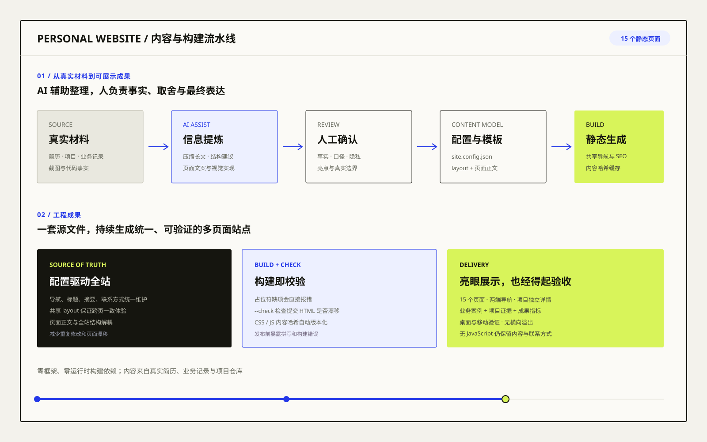

覆盖业务案例、5 个项目详情、工作经历、关于与联系信息。
05 / AI 辅助产品交付
把真实能力，
整理成一份会表达的作品集。
这个网站不只是简历的网页版，而是一套围绕 AI 产品经理岗位重新组织的内容产品：用成果证明能力，用案例展示方法，用流程图解释 AI 如何进入业务，再用统一构建保证多页面体验一致。
核心成果
从零散经历，变成可验收的岗位证据
网站把业务经历、代码项目和个人能力重新组织成招聘方可以快速判断的结构：业务案例证明落地，项目详情证明 AI 能力，结果指标证明价值。
把 AI 工作流、业务决策和工程成果转化为可视化证据。
使用 Node.js 内置能力生成静态页面，降低维护与发布复杂度。
不以“我会什么工具”开场，而以“我解决了什么”开场
首页和项目页先呈现业务结果、岗位能力和可验证成果，再解释工具与技术。招聘方能够快速看到 AI 产品判断、项目落地和业务价值，而不是被技术名词淹没。
业务案例和项目档案分线表达
“案例”回答我在真实业务中做了什么，“项目”回答我具备怎样的 AI 产品与工程实践。两条线互相支撑，形成从电商现场到 AI 产品能力的完整证据链。
从真实材料到高质量作品集

既像一个产品，也像一份能说服人的简历
01 / 成果先行
每个项目先回答“做出了什么”
核心指标、可验证规模和关键亮点放在页面最前，让招聘方在几十秒内形成明确判断。
02 / AI 贯穿
每个项目都解释 AI 的真实价值
分别说明 AI 解决什么问题、如何编排、怎样评测、人在哪里确认，避免把“AI”当作装饰标签。
03 / 证据充分
流程图、案例数据和项目边界并存
不只展示漂亮结论，也说明系统输入、处理、输出、采用方式和真实边界，增强可信度。
04 / 完整体验
桌面、移动、静态降级都可用
响应式布局、移动导航、日期更新、邮箱复制回退和无 JavaScript 访问共同构成完整体验。
用产品化方式维护一个持续成长的网站
统一内容源
导航、标题、SEO 摘要和联系方式集中配置，共享 layout 统一头部、导航与页脚。
构建即校验
缺占位符直接报错，内容检查命令发现提交 HTML 与模板源之间的漂移。
可验证交付
逐页检查 HTTP 状态、图片加载、内部链接、桌面与移动横向溢出及交互降级。
AI 在产品交付中的真实作用
AI 提高从材料到成品的速度，最终判断仍由我负责。
AI 可以快速提炼长文档、尝试信息结构、生成视觉方案和辅助实现代码，但岗位事实、成果口径、隐私范围、案例取舍和最终表达必须人工确认。
信息提炼
从简历、业务记录和项目材料中提取岗位相关信息，减少重复整理和遗漏。
内容重构
将技术实现转译成招聘方关心的业务结果、AI 产品判断和可迁移能力。
设计实现
用 AI 辅助生成信息结构、组件方案和代码实现，再通过浏览器验收持续修正。
质量验证
用构建检查、页面探针和多尺寸浏览器验证守住最终交付质量。
作品集要证明的岗位能力
能理解业务现场、识别 AI 场景、定义产品规则、组织跨部门落地、推动员工使用，并持续通过数据、SOP、知识库和培训把 AI 变成团队能力。